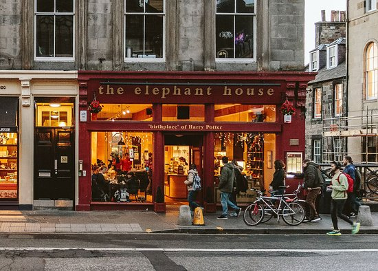
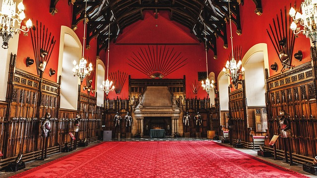
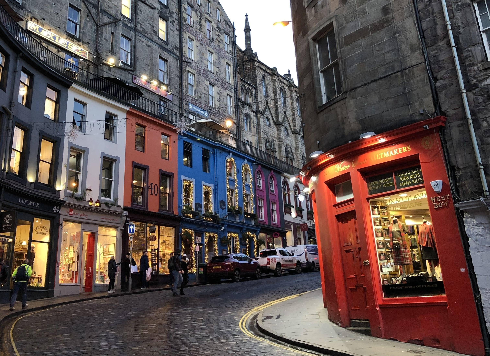

If you love this city click on the heart!
Discover Edinburgh

The Elephant House
Known as one of the places where J.K. Rowling wrote parts of the Harry Potter series, this café is a popular spot for fans to visit.

Edinburgh Castle
The historic fortress offers stunning views of Edinburgh and a glimpse into Scotland's royal history.

Victoria Street
This colorful, curved street in Edinburgh's Old Town is said to have inspired the magical Diagon Alley in the Harry Potter books.
Holyrood Palace
Located at the end of the Royal Mile, serves as the official residence of the British monarch in Scotland.